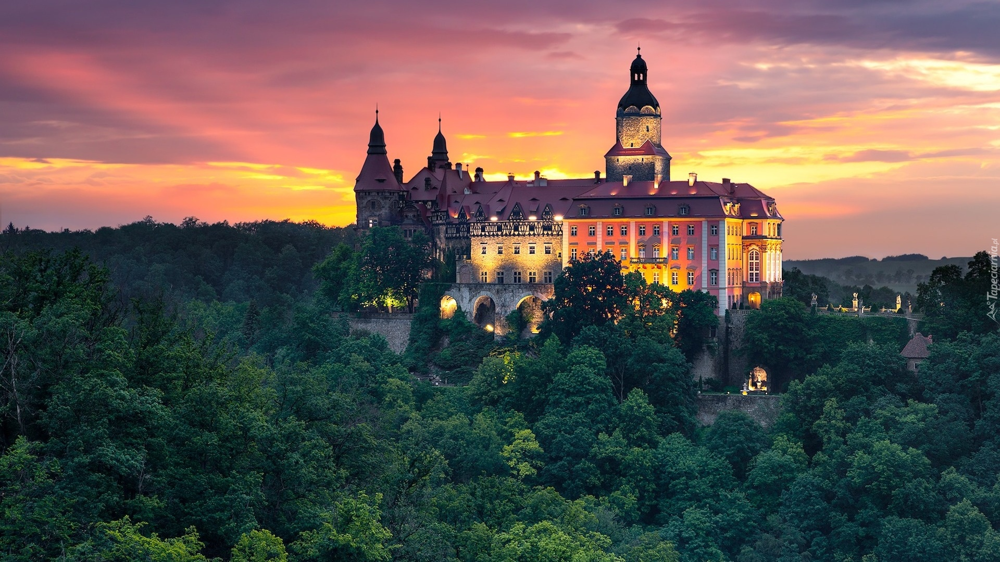
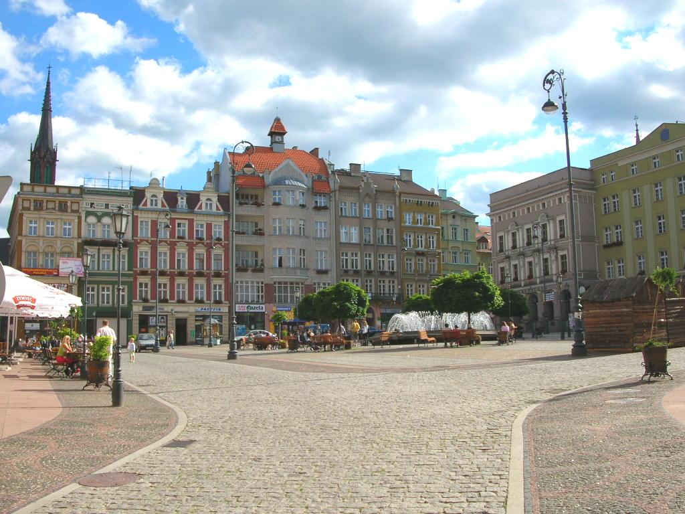
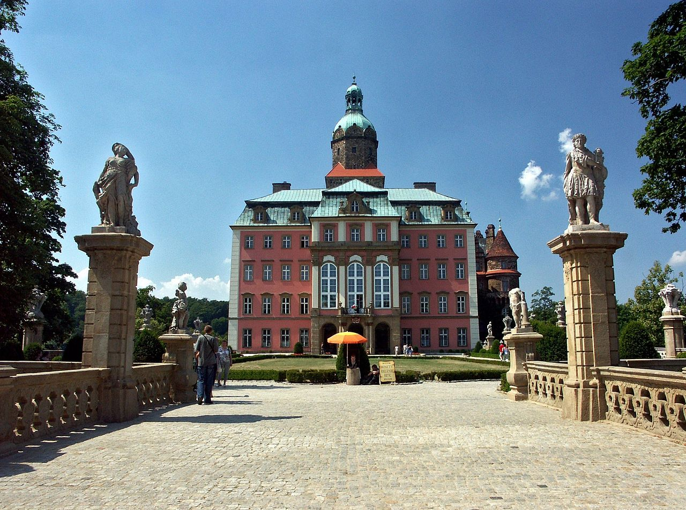

Wałbrzych (niem. Waldenburg, śl-niem. Walmbrig, Walmbrich, cz. Valdenburk, Valbřich) – miasto na prawach powiatu[4] na południowym zachodzie Polski, w województwie dolnośląskim nad Pełcznicą. Miasto leży na Pogórzu Zachodniosudeckim i Sudetach Środkowych w pasmie Gór Wałbrzyskich. Historycznie na Dolnym Śląsku. Siedziba powiatu wałbrzyskiego i główne miasto aglomeracji wałbrzyskiej. Aglomeracja liczy 230 tys. osób. Wałbrzych Plac Magistracki w nocy Wałbrzych – Plac Magistracki w nocy Wałbrzyski rynek – Pierzeja południowa Wałbrzych jest ośrodkiem przemysłowym, akademickim i naukowym Polskiej Akademii Nauk, miastem o funkcjach przemysłowo-handlowo-usługowych z rozwijającymi się funkcjami ośrodka turystycznego. Dawniej bardzo ważny i potężny ośrodek przemysłowy Dolnego Śląska, po Wrocławiu na równi z Jelenią Górą. Według danych GUS z 31 grudnia 2024 r., miasto było zamieszkiwane przez 98 748 osób

Wałbrzyski Rynek – centralny plac miasta, na którym w 1731 roku stał drewniany ratusz. W 1996 roku rynek przeszedł gruntowną modernizację, ograniczono na nim ruch samochodowy, wybudowano fontannę oraz elementy drobnej architektury (dotychczas mieścił się tam parking wybudowany w 1928 roku). Mieści się tutaj wiele zabytkowych kamienic. Na szczególną uwagę zasługują kamienica "Pod Kotwicą", "Kamienica pod trzema różami" oraz kamienica "Pod Atlantami", obecnie siedziba Biblioteki pod Atlantami. Na Wałbrzyskim Rynku również są inne zabytkowe kamienice.

Książ to największy zamek na Dolnym Śląsku, trzeci pod względem wielkości w Polsce (po Wawelu i Malborku). Zamek wybudowany został w latach 1288-1292 dla Bolka I, ażeby mógł się on bronić przed najazdem Czechów. Po wymarciu dynastii posiadłości dostały się we władanie korony czeskiej. W 1483 roku Książ wraz z przyległościami został wcielony do korony. Śląsk, po śmierci króla w 1490 roku, i niemożności utrzymania zamku przez Jerzego von Steina, trafił pod panowanie króla Władysława z dynastii Jagiellonów, który władał tronami czeskim i węgierskim. Zamek próbowano zdobyć, jednak bezskutecznie. Przez wiele dni oblegał zamek Kazimierz, który dopiero po otrzymaniu okupu zdecydował się opuścić zamek. W 1509 roku zamek trafił po panowanie Konrada von Hochberga. W czasie wojny trzydziestoletniej zamek trafił w ręce Szwedów. W 1646 roku większość umocnień i fortyfikacji zamku zostało rozebranych. W 1794 roku powstał Stary Książ, a w niedługim czasie oficyny gospodarcze dla koni, mieszczące później stado ogierów[1]. Ostatnia duża przebudowa miała miejsce za panowania Henryka XV von Hochberga. Wybudowano wtedy "czerwoną" część zamku. W czasie drugiej wojny światowej zamek splądrowały wojska hitlerowskie, a sam zamek zaczęli przystosowywać na potrzeby wojskowe. Wywiezione zostało całe wyposażenie zamku. Po wojnie konserwatorzy z Wrocławia zabezpieczyli zamek, a dopiero w 1957 roku zainteresowano się na szerszą skalę zdewastowanym budynkiem. W 1960 roku przeprowadzono badanie podziemnych tuneli, które zostały zabezpieczone w 1968 roku. W 1972 roku zamek został udostępniony do zwiedzania. Jednak ze względu na to, iż większość sprzętów i wyposażenia zostało wywiezionych, a wnętrze zamku zostało zdewastowane przez stacjonujących tutaj żołnierzy radzieckich (zniknęły m.in. zabytkowe malowidła, rzeźby), oraz przez pomieszkujących tu bezdomnych (którzy w zimie palili pozostałe sprzęty, gdyż w zamku nie było ogrzewania), zamek nie został zakwalifikowany do muzeów państwowych i jest obecnie utrzymywany przez gminę Wałbrzych.